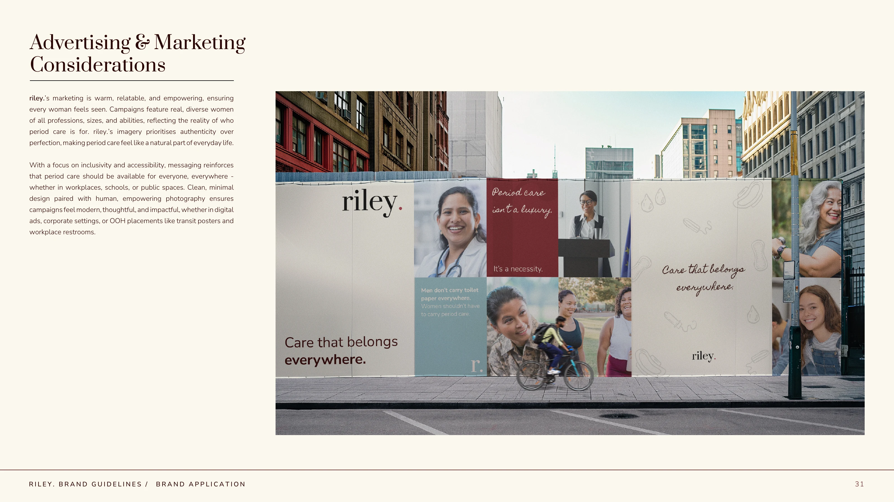

500+
Global organisations
Riley. has scaled its B2B footprint to supply free, sustainable period care across more than 500 organisations spanning corporate, education and hospitality environments.
Repositioning a period care brand for a more mature, sustainability-conscious audience and the workplace market.
Strategy, visual direction, packaging, marketing direction and creative leadership, with AI and 3D integrated into production before the new packaging had gone to print.

The brief was less about making Riley. look different, and more about making the brand fit the audience and opportunities it was moving toward.
The existing identity leaned heavily on soft pastel pinks, greens and blues, giving the brand a youthful, playful feel.
That visual language no longer matched Riley.’s next stage. The business wanted to reach more mature consumers who were already conscious of ingredients, product safety and sustainability, while also becoming credible to corporate offices looking to provide period care at work.


The new identity needed to speak to people who already understood the problem Riley. solves.
Rather than educating a younger audience from scratch, the refreshed brand was designed for customers more actively questioning what goes into conventional period products and making conscious choices around health, ingredients and sustainability.
At the same time, Riley. needed enough maturity and credibility to sit comfortably in workplace wellbeing programmes and corporate environments without losing the humanity of a personal care brand.
I developed the strategic and visual direction, then translated it into a practical brand system across logo use, colour, typography, illustration, photography and application.
The design direction became more editorial and restrained, with a deeper, more grown-up palette and clearer hierarchy. Warmer human details kept the system from becoming clinical or overly corporate.



Packaging became the clearest expression of the repositioning.
The refreshed system moved away from the previous pastel-heavy world and introduced more confident colour, editorial typography and a calmer hierarchy. The aim was to feel considered and credible on a bathroom shelf, in retail and in an office supply cupboard.


The packaging was designed, but the physical packs did not yet exist. I used AI and 3D as part of the production workflow so the new brand could be visualised, tested and communicated immediately.
Rather than waiting for manufacturing and photography, I directed a 3D artist and used AI-assisted image workflows to create believable branded environments and product scenes. This gave the team a way to see the identity behaving in the real world while final production was still underway.
AI was not the creative strategy. It was the accelerator that helped turn an approved system into campaign-ready imagery faster.


Before the refreshed packaging had gone to print, I used AI-supported image workflows alongside 3D production to visualise the new identity in context. This meant campaign thinking, social concepts and brand applications could develop in parallel with physical production rather than waiting for finished packs.

The visual direction was designed to move between product, lifestyle, education and workplace communications without becoming a different brand each time.


I owned the strategic and creative through-line, then brought in specialist talent where it would improve speed and execution.
I coordinated 3D designers, illustrators, social media specialists and packaging designers, setting the core system and giving each workstream a clear creative framework. This let multiple disciplines progress in parallel while keeping the end result coherent.
Before the rebrand, Riley.’s youthful, pastel-led identity still reflected its origins as a digitally led subscription start-up. The new strategy was designed for the company Riley. was becoming: more mature, more credible and able to operate confidently across corporate workplaces, established retail, hospitality and large public environments.
Since the rebrand, Riley. has expanded into exactly those spaces. The identity did not create those commercial wins on its own, but it helped give the business a complete strategic and visual system that could represent Riley. with greater credibility when speaking to larger organisations, buyers and partners.
Riley. has scaled its B2B footprint to supply free, sustainable period care across more than 500 organisations spanning corporate, education and hospitality environments.
The brand moved into established physical retail through Holland & Barrett stores in Ireland and John Bell & Croyden in London, giving the new packaging system a credible presence beyond DTC.
Riley.’s Period Emergency Kits launched through WHSmith locations across major European airports, extending the brand into a fast-moving, high-trust travel retail environment.
The Shelbourne Hotel in Dublin introduced Riley. period care for guests and staff, placing the brand within a premium hospitality setting.
Riley. secured a venue-wide partnership with Aviva Stadium, taking the brand into one of Ireland’s best-known national sports and entertainment environments.
The strongest result of the repositioning is not simply that Riley. looks more grown-up. It is that the brand now has the visual credibility and strategic consistency to sit comfortably in places that would have felt disconnected from its earlier start-up identity: corporate offices, premium retailers, five-star hospitality, airports and national venues.